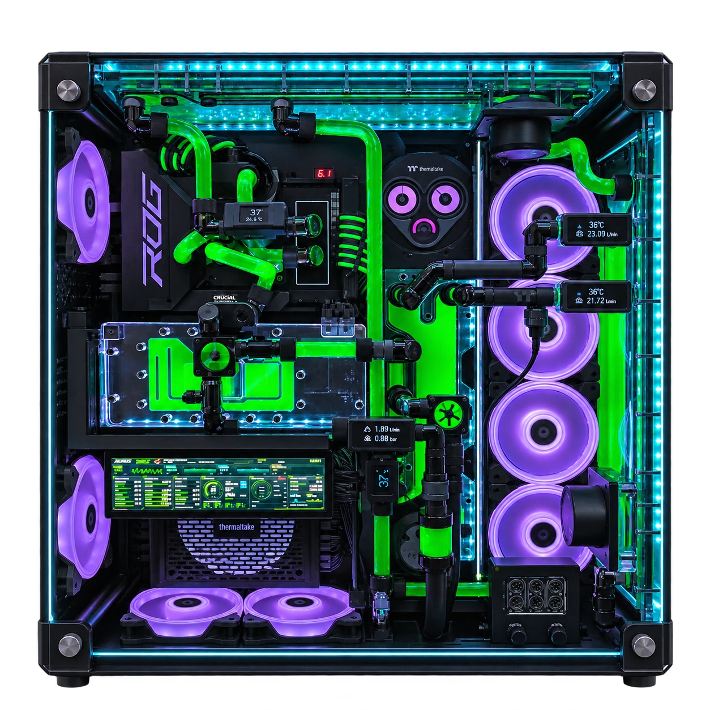
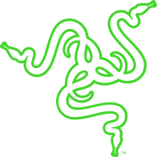

PROTOCOL ANALYSIS SOFTWARE ENGINEERINGEMBEDDED SYSTEMS THERMAL CONTROL
SELECTED WORK
Projects from the lab.
Operational software, security, voice assistance and hardware research: different projects, united by attention to real-world behavior.
Production software
ShipExpress
A logistics platform I designed to connect shipping, inventory, orders and administration. From carrier comparison to picking, documents and data analysis, ShipExpress brings operations together in one multi-tenant environment.
An experimental local AI workspace built on Strata. It brings together models, tools, documents and runtime observation, with prerequisites and limitations documented for each path.
A security assessment environment for authorized systems. It coordinates reconnaissance, code and application analysis, dependency and API checks, bringing results into a common workflow.
Private project · public overviewVOICE & ASSISTANCE
ARA
A personal assistant with a voice interface and document memory. It brings configurable engines, services, devices and operational tools together, with explicit confirmation for sensitive actions.
See what ARA doesPrivate project · public overviewTHERMAL CONTROL / RUST
StargateCryo
A dashboard to observe and manage an Intel Cryo controller, with telemetry, regulation, diagnostics and history. It integrates Core Temp clocks and Thermaltake TF2/TF3 sensors; thresholds and compatibility depend on the setup.
Research into liquid loops and thermoelectric systems, from sensor acquisition to condensation management. Controlled startup, safeguards and component limits are part of the design.
Private project · public overview

SHIPEXPRESS / LOGISTICS PLATFORM
Logistics connected from order to delivery.
ShipExpress is a platform I built to bring logistics and administration together. It connects carriers, marketplaces and business tools, with separate environments and dedicated permissions for each customer.
Automation, analytics and AI tools support daily operations, from preparing goods to understanding data and managing anomalies.
Wave pickingOrganize picking waves by status, type and priority. Development preview, read-only.
SHIPEXPRESS / PLANS
Start free. Grow at your pace.
ShipExpress supports businesses starting to ship and teams managing larger volumes. Begin with essential tools and choose the right level as your orders, people and processes grow.
Shipping, pickups, internal tracking, invoices and API documentation provide an operational starting point.
02 / EASY & BASIC
For online sellers
More volume and tools for customers and returns; Basic adds inventory, stock and team processes.
03 / PRO
More processes, more automation
For established operations: workflows, bulk actions, digital documents and ecommerce integrations.
04 / ENTERPRISE & ULTRA
For large organizations
Higher volumes, analytics, AI and advanced tools; Ultra adds dedicated services and infrastructure.
Modules, limits and conditions vary by plan. See the official comparison for current details.
SHIPEXPRESS / GROWTH OS
A team of agents, with human oversight.
Growth OS is ShipExpress’s research environment for organizing growth activities. Agents with distinct roles help gather signals, qualify leads, prepare content and analyze operations.
A shared view brings together agent activities and collaboration, through the operational office map. Proposals and experiments follow the controls and review steps established by the configuration.
Restricted environment · features and availability depend on configuration
Coordination, analytics, security, content, contacts and activation share one operational view.
02
Proposals to review
Activities produce drafts and proposals: review or application depends on the tier and active settings.
03
Experiment laboratory
Synthetic scenarios and structured evaluations help compare instructions and collect evidence, with human review.
04
Memory and collaboration
Agent communications, shared memory and tools to follow activities and results.
Growth OS is a restricted administrative environment: activation, autonomy and integrations depend on permissions, settings and development status.
GROWTH OS / HOW IT WORKS
From research to review and evolution.
The team works in stages: observing, preparing proposals and gathering evidence. Available steps and autonomy depend on the active controls.
01 / RESEARCH
Hunter finds leads
The research agent gathers potential contacts from public sources. The archive organizes source, score, category and status, respecting contact blocks.
02 / ANALYSIS
The team evaluates
Pulse analyzes signals, Sentinel covers security and Aether coordinates work; shared memory connects activities and evidence.
03 / PROPOSALS
Contacts, content and activation
Nexus prepares contact activities, Echo works on content and Guide on activation. External actions follow configured permissions and approvals.
04 / QUALITY
The judge reviews drafts
Proposal evaluations and decision records help distinguish material ready for use from material that needs review.
05 / SELF-EVOLUTION
Rules, controls and review
When enabled, Tier 1 can automatically apply certain verified proposals within configured limits. Tier 2 and Tier 3 require human intervention; canary checks and rollback are available for supported paths.
Agent laboratoryInternal trials evaluate scenarios and gather evidence before proposing changes.
Screenshots show the development environment and do not guarantee feature availability in every configuration.
SHIPEXPRESS / BEYOND SHIPPING
Beyond shipment management.
ShipExpress combines analytics, control and logistics tools that extend the platform’s daily operations.
01 / PLATFORM INTELLIGENCE
Anomaly analysis
AI tools support error classification and prepare suggested actions, with controls and review according to configuration.
02 / LOGISTICS HUB
Hub operations
A dedicated area brings together storage, goods transit, order fulfillment and additional services, with customer-facing views.
03 / CREDIT INTELLIGENCE
Credit and risk
An administrative module brings together scoring, risk analysis and fraud controls, depending on active integrations and permissions.
Feature availability depends on plan, configuration and development status.
ARA / PERSONAL AI SYSTEM
A personal system beyond voice.
ARA is the system I developed to interact with my digital environment. It brings conversation, memory and operational tools together in an interface with an avatar and control center.
It can connect authorized applications, computers and devices: each integration retains its own permissions, and sensitive operations require confirmation.
Voice, models, devices, operational controls and music in a single view.
Voice and presence
Voice conversation, recognition, synthesis and avatar, with configurable local or cloud engines.
Computer and projects
Tools for authorized browsers, applications and files, plus connections to Codex and OpenCode clients for project work.
Memory and documents
Document memory, source reading and configurable access to local information.
Devices and home
Connect brings together paths for Android, TV, lighting and Google Home, depending on available devices, accounts and permissions.
Music and environment
Controls and integrations for music playback, Spotify and SignalRGB lighting.
Communication and control
Configurable channels including Telegram and WhatsApp Business, plus a control center for services, engines and permissions.
Actual availability depends on configuration, compatibility, permissions and active services. ARA is a private project.
PRIVATE LAB / RESEARCH & DEVELOPMENT
One lab, many disciplines.
Stargate Labs is where I develop applications and test ideas that cross software, electronics and physical systems. Protocol analysis meets hands-on device experimentation and a focus on security.
From temperature control to communication between different devices, the work starts with observation, continues through prototypes and tests, and records the evidence in documentation.
Images reworked with AI from photographs of the laboratory.
01Software engineeringApplications and architecture
02Security researchAnalysis on authorized systems
03Hardware & protocolsDevices and interoperability
04Thermal controlSensors and experimentation
DEVICE INTEROPERABILITY
From protocol to light.
Three independent integrations bring different devices into the SignalRGB ecosystem. Each project documents installation, verification and compatibility.

01 / SIGNALRGB
Stream Controller X
SignalRGB effects across 15 keys as one continuous 480 × 288 image. RGB565 transport, tile-based transfers and full-framebuffer checks.
Independent projects, not affiliated with hardware vendors. Protocol checks do not certify optical synchronization. Compatibility details are documented in each repository.
ENGINEERING PRACTICE
Method before tools.
01
Understand before changing
Reconstruct flows, formats and constraints from code, traffic and observable behavior. Keep hypotheses separate from evidence.
02
Design for recovery
Backups, reconnects, timeouts and missing-data handling are part of implementation alongside the primary feature.
03
Verify behavior
Protocol tests, regression checks and physical device observations answer different questions. Documentation identifies the evidence behind each result.
A multi-tenant management platform for shipping, inventory, orders, documents and CRM. Each customer has a separate domain, database and role hierarchy. Integrations cover rate comparison, shipment creation and tracking, cash on delivery, delivery documents and electronic invoicing. Inventory includes stock, locations, movements, counts and packaging; orders include status workflows and barcode picklists. Document search uses RAG and natural-language queries.
Documented 2026.2.5 snapshot: 1,462 API endpoints, 357 data models, 42 carriers, 74 services and 8,896 tests across 1,059 files. These retain the previously published version context; they are not fresh measurements of the current build.
ARGUS
The analysis workflow coordinates 17 scanners: 6 reconnaissance, 4 DAST, 1 SAST, 2 SCA, 2 exposed-credential scanners, 1 API scanner and 1 fuzzing tool. Tool images are pinned to specific versions. The agent workflow separates planning from execution on authorized targets.
Previously documented v0.2.0 snapshot: 14,071 TypeScript lines, 42 test files, 71 API endpoints and 11 tables. Counts describe that version.
ARA
ARA brings together voice and avatar, memory and documents, computer and project tools, devices, music and communications. Local and cloud engines, accounts and devices depend on configuration; sensitive operations follow their permissions and confirmation requirements.
The earlier description documented Whisper, Kokoro and TF-IDF memory: it described a historical configuration, not all current integrations.
Previously documented snapshot: 29,537 Python lines. The sub-5 ms figure in the previous presentation concerns routing, not the complete voice response; it was not remeasured in this update.
StargateCryo and hardware
The project documents a modified Intel Cryo Gen 1 controller paired with a Gen 2 TEC assembly. The published desktop version integrates Core Temp and Thermaltake TF2/TF3 sensors. Configuration, profiles, logs, history, diagnostics and reporting remain documented in its repository. Source and desktop binary provenance and limits are explicit; publication did not change the active controller settings.
Publication verification: 322 application tests and 28 library tests passed. Earlier percentage-to-watt conversions and OCP descriptions are superseded by the v2.9.0 release notes and are not presented as current facts.
GITHUB / PUBLIC ACTIVITY
Statistics and visits.
Public repository data and the profile visitor counter, preserving the existing sources.